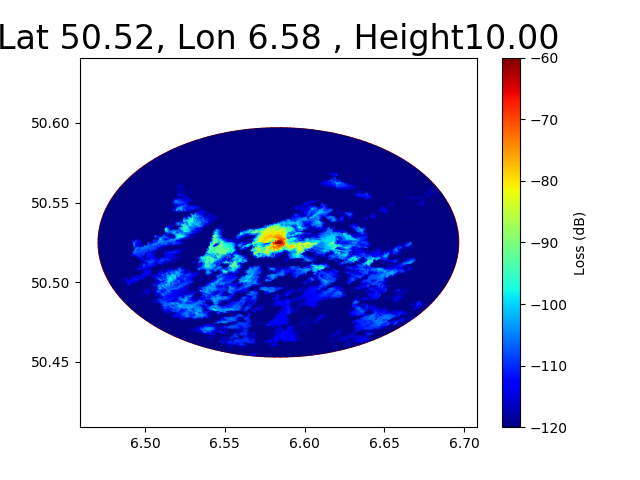
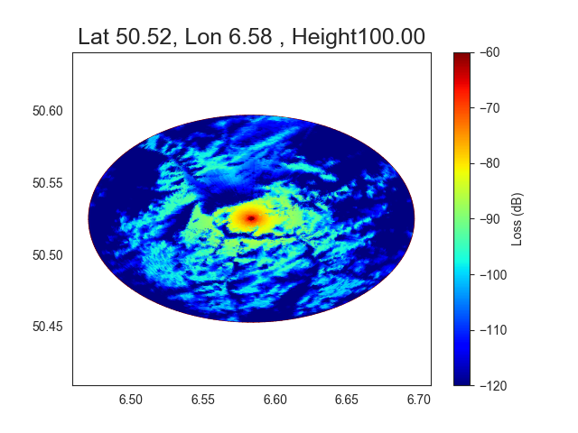

Note
Click here to download the full example code
Outdoor Radio Coverage with Deygout Method¶
This is an example of path loss prediction with Deygout method with srtm data.
Here a comparison of the coverage for 3 different heights 50,100 ,150 meters.
f = 474.166 MHz Saint Pern
- 

- 
Out:
SRTMDownloader - server= dds.cr.usgs.gov, directory=srtm/version2_1/SRTM3.
N48W002.hgt.zip
Computation time : 15.11 seconds
Computation time : 14.04 seconds
Computation time : 12.93 seconds
from pylayers.gis.ezone import *
import pandas as pd
import matplotlib.pyplot as plt
import numpy as np
import time
#
# Saint Pern Transmitter
#
latgw = 48.28693
longw = -1.95677
tilename = enctile(longw,latgw)
dem=DEM(enctile(longw,latgw))
dem.dwlsrtm()
xgw,ygw = dem.m(longw,latgw)
ez = Ezone(enctile(longw,latgw))
ez.hgts=dem.hgts
ez.rebase('srtm')
pa = np.array([longw,latgw])
for Ht in [50,100,150]:
tic = time.time()
L1 = ez.cover(pc=pa, Ht=Ht, Hr=1.5, Nr=200, Rmax=20000, method='deygout',
source='srtm',fGHz=0.474166)
toc = time.time()
print(" Computation time : {:.2f} seconds".format(toc-tic))
tc = plt.tripcolor(L1[0],-L1[1].flatten(),
shading='gouraud',
cmap='jet',
vmax=-60,
vmin=-120,
alpha = 1,
edgecolors='k',
linewidth=0.0)
plt.title("Lat {:.2f}, Lon {:.2f} , Height{:.2f}".format(latgw,longw,Ht),fontsize=18)
plt.axis('equal')
cb = plt.colorbar()
cb.set_label("Loss (dB)")
plt.show()
Total running time of the script: ( 0 minutes 50.216 seconds)